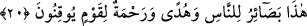

velîsidir” ki sen onların önderi ve liderisin. Sen takva ve şeriat dostluğunda daim ol,
başka her şeyden tamamen yüz çevir.
Bazıları demiştir ki: “Allah sana bir nimet murâd etse, hiç kimse buna engel olamaz.
Şâyet bir belâ murâd etse, hiç kimse onu senden bertaraf etmeye muktedir olamaz.
Öyleyse düşünceni hiçbir yaratığa bağlama. Gönlünü bizden başkasına çevirme. Bize
güven ve bize tevekkül et ve dayan.”
et-Te’vilâtu’n-Necmiyye’de şöyle denilmiştir: “Allah bunlara zâlim demiştir. Çünkü
onlar eşyayı yerli yerine koymadılar. Allah müminlere muttakîler demiştir. Çünkü onlar
zulümden sakındılar ve bütün işlerde Allah’ı dost edindiler.”
20. Bu (Kur’ân), insanlar için bâsîret nurları, kesin olarak inanan bir toplum için
hidâyet ve rahmettir.
Bu (Kur’ân), insanlar için bâsîret nurları, Bu Kur’ân’da dinin yol işâretleri ve
şeriatlar vardır ki bunlar gönüllerdeki bir takım bâsîretlerdir. Sanki Kur’ân, ruh ve
hayat mesabesindedir. Kim Kur’ân’dan uzak olursa baş ve gönül gözünü kaybetmiştir ve
ölü gibidir. His ve hayatı olmayan, cansız gibidir.
Burada “basâir”i Kurân’a hamletmek, Kurân’ın cüzleri itibariyledir. Allah Teâlâ’nın:
“Doğrusu size rabbinizden bâsîretler geldi” (En’âm, 6/104) ifâdesi de bunun bir
benzeridir. Yâni “Kur’ân ve Kur’ân âyetleri geldi” demektir. Yine Allah Teâlâ Mûsâ
(a.s.)’a verdiği dokuz âyet hakkında: “Mûsâ dedi ki bunları ancak göklerin ve yerin
rabbinin benim doğruluğumu belgeleyen bâsîretler, kanıtlar olarak indirdiğini
pekâlâ bildin” (İsrâ’, 17/102) buyurmuştur.
“Basâir” kelimesi, “bâsîret” kelimesinin çoğuludur. İşte Kur’ân, insanların aklen
anlaşılabilecek hususları kendisiyle gördüğü nurdur. Aynı şekilde “basar” da gözün
kendisiyle mahsûsâtı, his ve duyu ile algılayabileceği şeydir. Burada “hâzâ” ism-i
işâreti, şerîata ittibâ etmeye işâret olabilir. “Basâir”, bu ittiba işine hamledilmiştir.
Çünkü muzâf olan mastar (ittibâu’s-şerîa), ittiba kelimesi genel mânâ ifâde eden
kalıplardandır. Sanki şeriata bütünüyle uymak demek olur.
“Kur’ân, kesin olarak inananlara”, sapıklık tehlikelerinden “yol gösterici” ve
Allah tarafından büyük bir nimet “ve rahmettir.” Çünkü dünyevî ve uhrevî bütün
mutluluklar bununla hâsıl olur. Onlar böyle önemli işlere kesin inanırlar. Bu öyle bir
kavimdir ki şüpheye düşmezler, yâni bu kimseler şüphe ve zan çölünden geçmiş, yakîn
menzilinin başına ulaşmayı talep etmişlerdir.”
et-Te’vilâtu’n-Necmiyye’ de şöyle denilmiştir: Bu Kur’ân bâsîret nurlarıyla yakîn
makamına vuslat için hazır olanlara hidâyet ve rahmettir. Bu nurlar parıldayınca hakla
bâtıl ayan beyân ortaya çıkar. İnsanların nazarları mertebe mertebedir. Akıl nuruyla